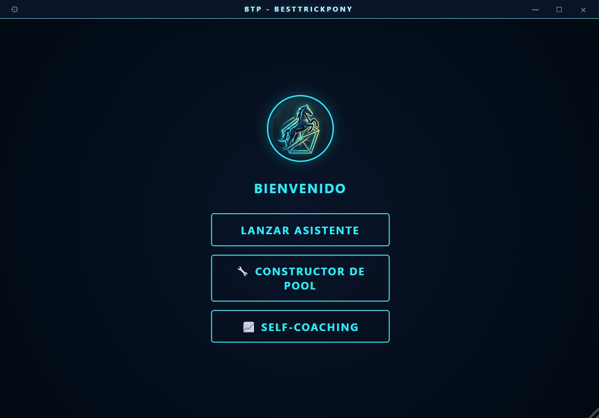
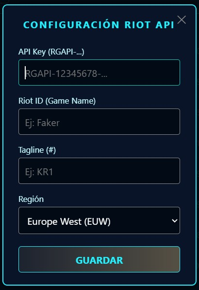
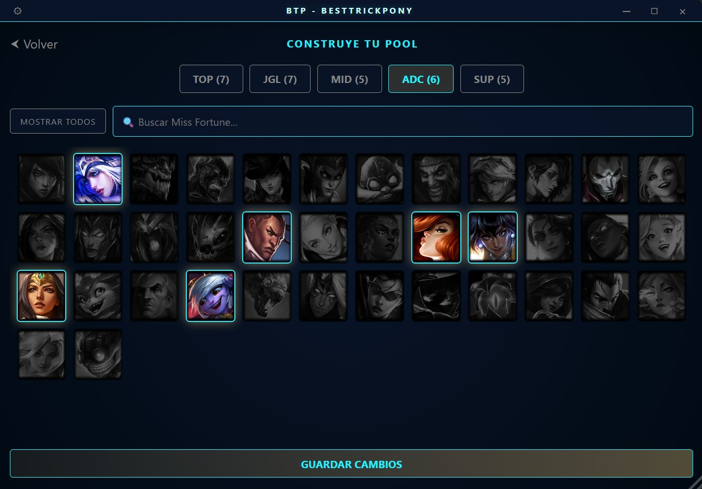

De cero a experto en tres pasos. BTP está diseñado para ser intuitivo y silencioso. Configúralo una vez y deja que trabaje en segundo plano mientras tú te concentras en ganar.

El Centro de Mando: Desde aquí puedes lanzar el Asistente de Draft, configurar tu Champion Pool o revisar tu historial de Self-Coaching.
Para que el módulo de Self-Coaching pueda descargar tus estadísticas reales al terminar cada partida, necesitamos conectarnos con Riot Games.
Ve a Ajustes (el engranaje arriba a la derecha) o entra en la pestaña Self-Coaching y haz clic en "Riot API".
Introduce tu Riot ID (Ej: Faker#KR1), tu región y la Development API Key que puedes generar gratuitamente en el portal de desarrolladores de Riot. Haz clic en Guardar y ¡listo!
Solo tendrás que hacer esto una vez. Tu clave se encriptará localmente para tus futuras sesiones.

Haz clic en Constructor de Pool desde el menú principal.
Aquí verás pestañas para cada rol (TOP, JGL, MID, ADC, SUP). Usa el buscador para encontrar a tus campeones de confort y añádelos a tu lista. BTP usará esta información para darte prioridad de picks cuando estés en el draft.
Tip Pro: Recuerda darle a "Guardar Cambios" antes de cambiar de rol o cerrar la ventana.

¡Ya está todo configurado! Minimiza BTP y entra a una partida. Si tienes activada la opción en ajustes, el asistente de draft se abrirá solo al encontrar partida.
Cuando el Nexo explote, BTP detectará el final del juego y lanzará un Mini-Popup en tu pantalla. Tómate 10 segundos para puntuar tus sensaciones, visión y farmeo. BTP cruzará tus notas con las estadísticas oficiales y lo guardará en tu historial de Self-Coaching.
Descarga la última versión y empieza a trackear tu progreso hoy mismo.
Ir a Descargas